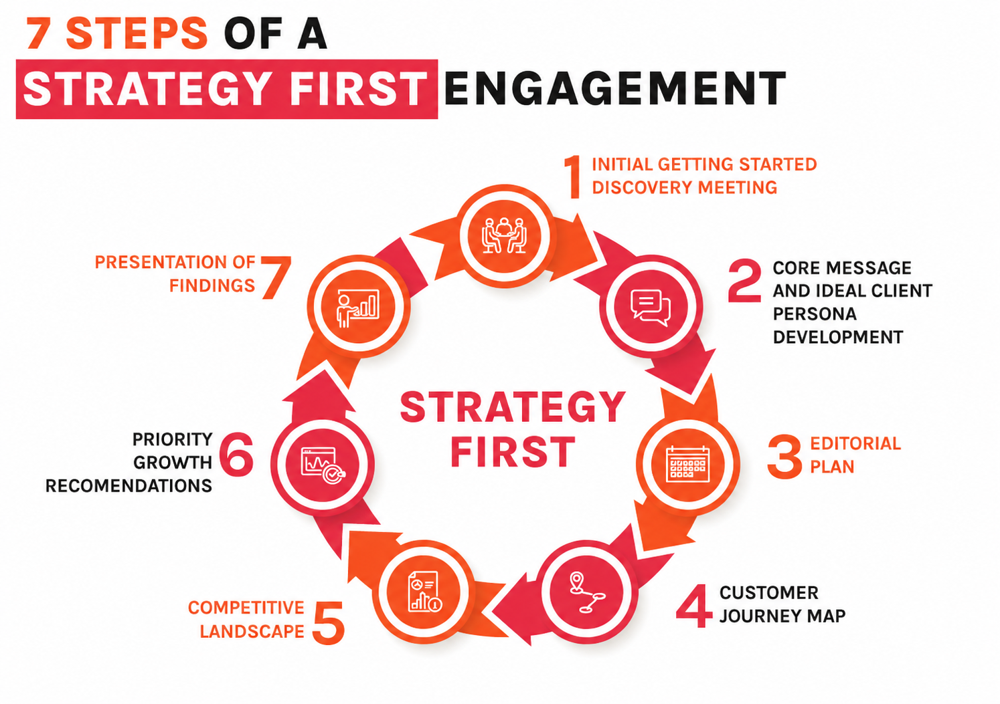

A Strategy First engagement builds your complete marketing foundation — the message, the plan, the competitive intelligence, and the 90-day roadmap — before a single dollar is spent on execution.

The Strategy First engagement follows 7 structured steps from discovery to a complete, custom marketing plan.
Running ads before you know your core message. Posting on social media before you know who you're talking to. Rebuilding a website before you understand why the old one didn't convert. These aren't execution problems — they're strategy problems.
A Strategy First engagement fixes the foundation. Over the course of 7 structured steps, we audit your brand, analyze your market, build your ideal client profile, map your customer journey, and deliver a complete marketing plan you can execute immediately. With us, or on your own.
The result is a marketing system that's built around your specific business — not a template, not a generic playbook.
Each step builds on the last. By the end, every piece of your marketing has a clear strategy behind it.
The first step is a structured discovery session where we go deep on your business. Not a surface-level intake — a real working conversation about who your best customers are, what you sell most profitably, what you've tried before, and where the gaps are.
This session sets the foundation for everything that follows. The more honest you are here, the sharper your strategy will be.
Before any marketing can work, you need to know exactly who you're talking to — and what to say to them. We develop a detailed ideal client persona and craft a core message that speaks directly to their problem, their language, and why you're the right solution.
This becomes the through-line for everything: your website, your content, your sales conversations, your ads. One clear message, delivered consistently, converts far better than ten clever ones.
A marketing strategy without a content plan is just theory. The editorial plan maps out what to create, where to publish it, and how every piece connects back to your business goals and customer journey.
No random posts. No busywork. Every piece of content has a purpose — to build awareness, deepen trust, or move a prospect closer to a buying decision.
We map every step your customer takes — from the moment they first hear about you to becoming a loyal, referring customer. Using the Marketing Hourglass framework (Know → Like → Trust → Try → Buy → Repeat → Refer), we identify exactly where prospects are falling off and what needs to happen at each stage to move them forward.
Most businesses are strong in one or two stages and have significant leaks in the others. The journey map shows you where the revenue is escaping.
We analyze your top competitors — how they position themselves, what they're doing well, where they're weak, and what's working in your market. This gives you a clear picture of the landscape and where the real opportunities are to differentiate.
The goal isn't to copy what's working for competitors. It's to find the white space they're all ignoring — and own it.
Based on everything we've uncovered — your goals, your customer journey gaps, your competitive landscape, and your team's capacity — we build a prioritized list of the highest-leverage marketing moves for your business.
Not a 47-item wishlist. A focused, sequenced plan of the 3–5 things that will move the needle most, in the right order. Strategy is as much about what you don't do as what you do.
We bring everything together in a comprehensive Strategy First presentation — your brand audit, competitive analysis, ideal client personas, core message, customer journey map, content strategy, and 90-day execution calendar.
You walk away with a complete marketing playbook you can implement immediately. With us, with your own team, or with another vendor. The strategy is yours to keep — no strings attached.
A Strategy First engagement produces real, usable assets — not just advice.
A detailed profile of your best-fit customer — their goals, frustrations, buying triggers, and the language they use.
Your positioning statement and value proposition, ready to use across your website, sales conversations, and content.
A visual map of every touchpoint from first contact to loyal referral — with gap analysis and recommended fixes.
A practical content plan with specific topics, formats, channels, and publishing dates mapped to your goals.
A breakdown of how your top competitors are positioned and where the white space is for you to own.
A sequenced list of your 3–5 highest-leverage marketing moves, with success metrics and implementation guidance.
It's not for every business. It's for owners who've been running on gut instinct and word of mouth — and know they need a real system to get to the next level.
If that sounds like you, a 30-minute discovery call is the right next step. No pitch. We'll talk through your situation and tell you honestly whether Strategy First is the right fit.
Schedule a free 30-minute discovery call. We'll walk you through the process, answer your questions, and tell you honestly if Strategy First is the right fit for where your business is right now.
No commitment. No pitch. Just a real conversation about your business.